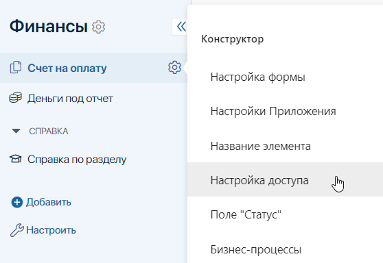
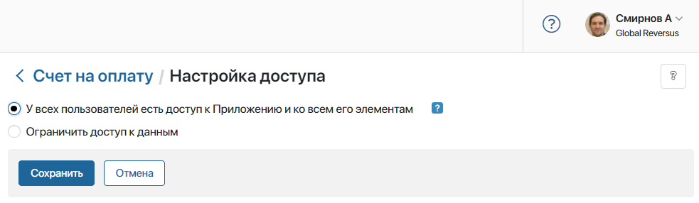
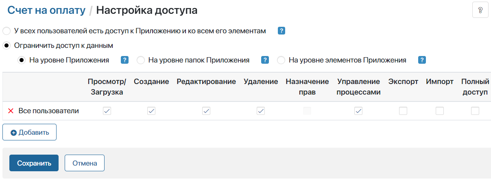
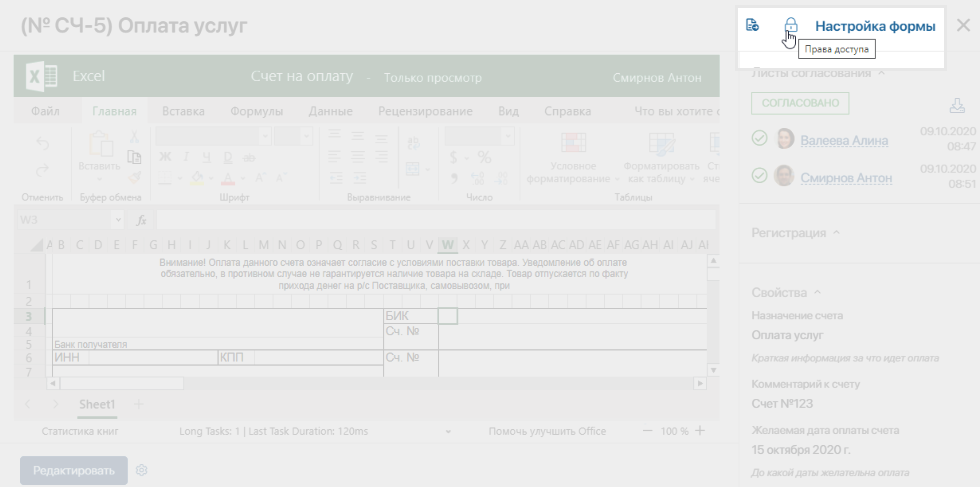
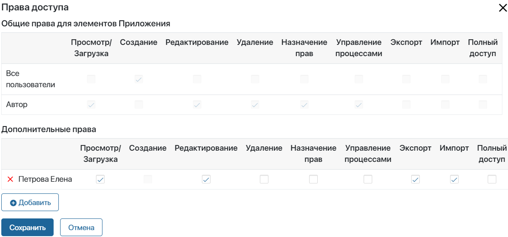
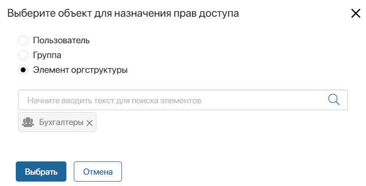

В любой организации существует иерархия, согласно которой распределяются ответственность и полномочия сотрудников. У каждого своя роль в компании и свой уровень доступа к информации.
В ELMA365 вы можете указать, кто из сотрудников будет просматривать, редактировать или удалять определённые файлы, папки и документы, а также изменять их настройки доступа.
Доступ к документам
В зависимости от занимаемой должности или роли, у сотрудников могут быть различные права доступа к одному и тому же документу. Например, сотрудники могут просматривать, редактировать или удалять только те счета, которые добавили сами. Вместе с тем, директор имеет полный доступ ко всем счетам, созданным его подчинёнными.
Документы в ELMA365 хранятся в приложениях типа Документ. Вы можете настроить доступ к приложению, а также к разделу, в котором оно располагается. Сотрудники без доступа к приложению смогут открыть отдельные документы только по прямым ссылкам, если им предоставлены соответствующие права. Подробнее читайте в статье «Система прав доступа в ELMA365».
Чтобы настроить доступ к данным определённого документа, откройте приложение и нажмите значок шестёренки справа от названия. В выпадающем меню выберите пункт Настройка доступа.

Откроется страница с настройками доступа. По умолчанию выбрана опция У всех пользователей есть доступ к Приложению и ко всем его элементам. Это значит, что все сотрудники могут создавать, просматривать, редактировать и удалять элементы приложения, а также экспортировать и импортировать данные.

Если вы хотите настроить доступ, выберите опцию Ограничить доступ к данным. Она позволяет указать сотрудников и определить, какие действия они могут совершать с документами.

Доступ к документам можно ограничить:
- На уровне Приложения — данная опция позволяет задать одинаковые настройки доступа для всех документов, хранящихся в приложении. Например, можно оставить всем пользователям права на просмотр документов, а доступ на редактирование и создание предоставить только руководителям;
- На уровне папок Приложения — выбрав эту опцию, вы сможете задавать права доступа отдельно для папок при настроенном иерархическом справочнике в приложении. Сначала требуется указать права доступа ко всем папкам по умолчанию. Затем настроить доступ для каждой папки в отдельности;
- На уровне элементов Приложения — включите эту опцию для того, чтобы настраивать индивидуальные права доступа для каждого документа в приложении. Как и при выборе доступа На уровне папок Приложения, сначала задайте общие настройки прав для всех документов. Затем ограничивайте доступ к каждому документу на его карточке просмотра.
Ограничение на уровне папок и на уровне элементов позволяет, например, разрешить полный доступ к документам исключительно их авторам. Все остальные пользователи смогут только создавать новые документы внутри приложения. Чтобы поделиться определенными документами необходимо настроить дополнительные права доступа пользователю, группе пользователей или элементу организационной структуры. Подробнее о предоставлении и ограничении индивидуальных прав читайте в статье «Доступ к данным приложения».
Типы прав доступа к документам
Пользователям можно настроить следующие права доступа:
- Просмотр/Загрузка — разрешено просматривать документы и загружать версии файла на локальный компьютер;
- Создание — разрешено создавать документы;
- Редактирование — разрешено вносить изменения в раннее созданные документы, переименовывать их, добавлять версии файлов, а также возвращать из архива листы согласования;
- Удаление — разрешено удалять документы;
- Назначение прав — разрешено выдавать и ограничивать права доступа к отдельным документам. Опция не доступна при выборе пункта На уровне приложения;
- Управление процессами — разрешено прерывать бизнес-процессы, открывать карточки задач и переназначать задачи;
- Экспорт — пользователям разрешено экспортировать элементы приложения, которые они могут просматривать. Опция не доступна при выборе пункта На уровне папок приложения;
- Импорт — разрешено импортировать данные приложения. Опция не доступна при выборе пункта На уровне папок приложения;
- Полный доступ — разрешены все перечисленные выше действия.
Индивидуальные права доступа к документу
Если вы выбрали опцию ограничение На уровне элементов Приложения, то вы сможете предоставлять или ограничивать доступ к конкретным документам внутри приложения. Для этого перейдите на страницу приложения и откройте нужный элемент. Нажмите на значок замка справа от названия документа.

В открывшемся окне вы увидите два блока настроек доступа: Общие права для элементов приложения и Дополнительные права.

- Общие права элементов приложения:
В этом блоке отображаются права, применяемые ко всем документам, хранящимся в приложении. Настройки, указанные в этом блоке, нельзя отменить.
- Дополнительные права:
Здесь вы можете предоставить доступ к документу кому-то еще, кроме сотрудников, перечисленных в первом блоке. Для этого нажмите на кнопку + Добавить. В открывшемся окне выберите пользователя, группу сотрудников или элемент организационной структуры.

После того как вы добавите объект, укажите права доступа для него и нажмите Сохранить.
Настройка доступа к файлам
В ELMA365 можно ограничить видимость файлового хранилища для определённых групп сотрудников, а также гибко настроить доступ к отдельным файлам и папкам с файлами. Например, папка с презентациями по продуктам может быть доступна только менеджерам по продажам. Другие сотрудники не увидят её в списке папок. По умолчанию файлы внутри этой папки наследуют настроенные для неё права, однако для отдельных презентаций можно ограничить или предоставить доступ дополнительным сотрудникам.
Доступ к файлам настраивается:
- на уровне раздела Файлы;
- на уровне отдельных папок и файлов.
По умолчанию у всех пользователей есть доступ к разделу Файлы. Администратор системы может ограничить его видимость. Раздел не будет отображаться для пользователей в левом меню, однако они смогут открывать файлы и папки по прямым ссылкам, если им предоставлены достаточные права. Ограничение доступа к разделу полезно, когда в систему входят пользователи, которые не должны работать с файловым хранилищем, например внешние аудиторы. Подробнее о настройках доступа к разделу читайте в статье «Настройки раздела „Файлы“».
Также внутри раздела Файлы можно управлять доступом к папкам и отдельным файлам — ограничивать или предоставлять права для определённых пользователей, групп и т. д. Управление правами доступно:
- автору файла или папки;
- пользователям с типом доступа Назначение прав;
- пользователем, входящим в группу Администраторы.
Подробнее об ограничении доступа к отдельным объектам в разделе читайте в статье «Права доступа к файлам и папкам».